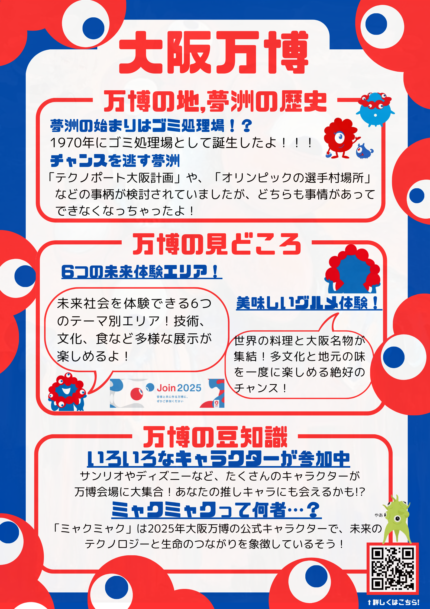
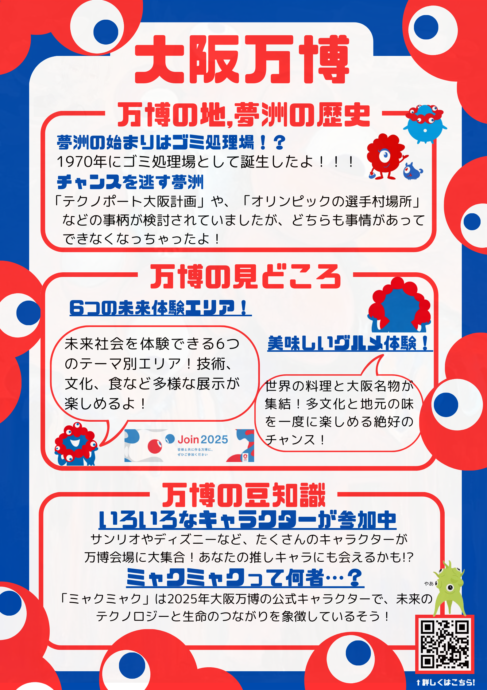
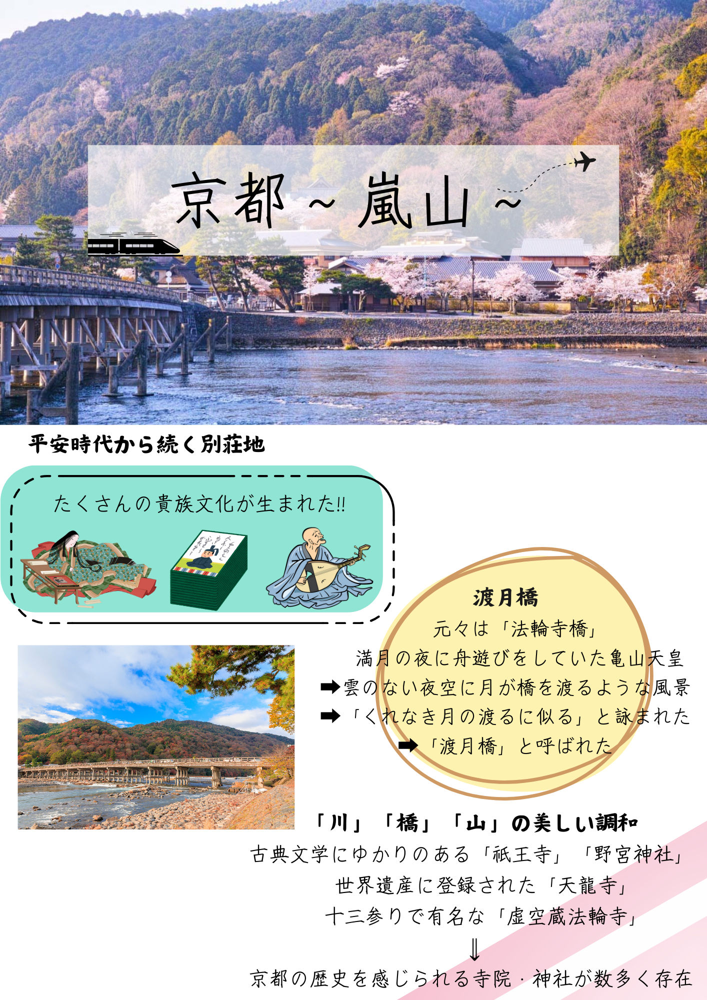
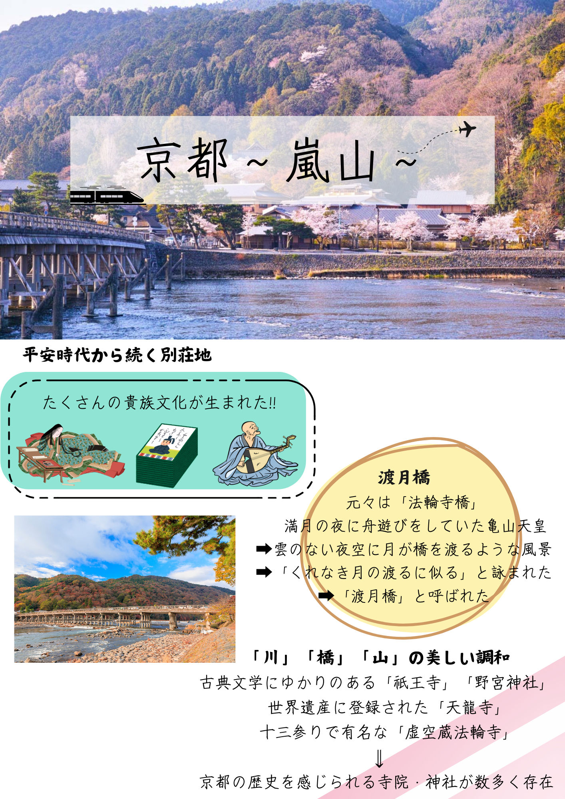

基本情報
日程: 〇月〇日
時間: 〇時〇分
集合場所: 〇〇駅
到達地: 〇〇駅
ねらい
生徒個々の自立に向けての成長につなげ、「生きる力」を高める
学年、学級集団の民主的・自主的な力を伸ばす
日本古来から培われた文化にふれる
目標
実行委員会を組織し、修学旅行の自主的な諸活動を、生徒一人ひとりが自らの手で作り上げていくことで、主体的に取り組む力を身に付ける
事後活動にて自らの体感をまとめ、他人に伝えられるよう思考・表現する力を身につけさせる
古都の散策から日本の歴史を体感し、大阪万博から最先端の技術を体感することで生徒一人ひとりの視野を広げる
京都とは？
京都（きょうと、みやこ、きょうのみやこ、英: Kyoto[1][2][3]）は、日本の地名、都市。794年以降日本の首都であった平安京が位置し、都もしくは京などとも呼ばれていた。古くから日本の政治・文化の中心地として栄え、金閣寺や清水寺をはじめとする文化財が多く残る地域である。 現在京都といえば、広義では京都府を、狭義ではその府庁所在地たる自治体の京都市、もしくはその中心部の地域を指す。引用Wikipedia
大阪とは？
大阪（おおさか、英語: Osaka）は、日本の近畿地方（関西地方）の地名、都市。 律令国では摂津国の範囲であり、近畿の経済・文化の中心地。 かつては大坂[1][2][3]と表記し、古墳時代から江戸時代以降の長きにわたり、日本経済と文化の中心地であった。そのため、京都と共に上方と呼ばれ、古都・副都・水都としての歴史も持つ。 現在の「大阪」は、近畿地方に位置する包括的地方公共団体・大阪府や、その府庁所在地であり西日本最大の都市・大阪市を指し、広い意味では大阪市を中心とする京阪神（近畿地方、大阪都市圏〈阪神都市圏〉、京阪神大都市圏、近畿圏など）を漠然と総称することにも使われる。引用Wikipedia
大阪万博質問Q&A
Q: 大阪万博とは？
A: 大阪万博（正式名：2025年日本国際博覧会）は、
2025年に大阪の夢洲（ゆめしま）で開催される国際博覧会です。
テーマは「いのち輝く未来社会のデザイン」で、
最先端技術や文化交流を通じて持続可能な社会を目指します。
Q: 何ができるの？
A: 最先端技術の体験や 世界の文化交流、 SDGs（持続可能な開発目標）の学びなどができます
Q: いつ開催されるの？
A: 開始日：2025年4月13日 終了日：2025年10月13日
みんなのPRポスター
 



 



しおり
しおり